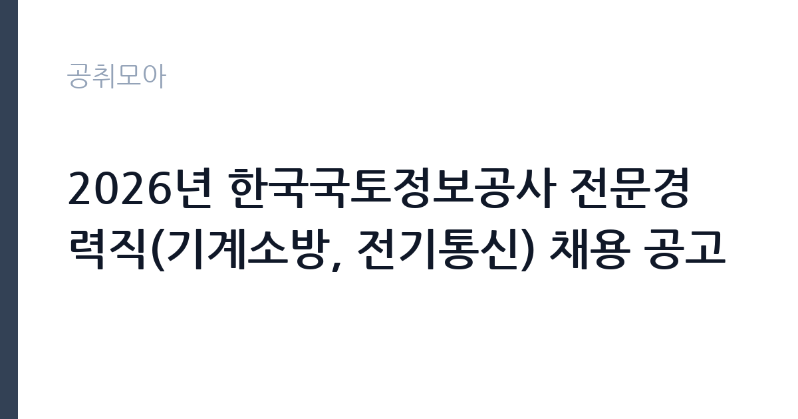

[공공기관] 2026년 한국국토정보공사 전문경력직(기계소방, 전기통신) 채용 공고
한국국토정보공사 · 충남 · 마감 2026-11-17 (D-14) · 출처 잡알리오

한눈에 보는 모집 조건
| 기관 | 한국국토정보공사 |
|---|---|
| 공고명 | 2026년 한국국토정보공사 전문경력직(기계소방, 전기통신) 채용 공고 |
| 고용형태 | 정규직 |
| 근무지 | 충남 |
| 게시일 | 2026-11-03 |
| 마감일 | 2026-11-17 (D-14) |
지원자격, 이렇게 읽으세요
- 공공기관 채용공시
- 세부 조건은 원문 공고문 확인
정규직 채용은 기간의 정함이 없는 근로계약을 전제로 합니다. 수습 기간을 두고 평가한 뒤 정규직으로 확정하는 절차가 일반적이며 기관의 인사 규정과 임금 체계를 적용받습니다. 이번 공고는 한국국토정보공사가 직접 진행하는 자체 전형입니다. 전기 직무는 전기기능사 이상의 자격을 요구하는 경우가 대부분입니다. 전기산업기사나 전기기사 자격을 우대하거나 필수로 두는 공고도 있습니다. 실무 경력 요건이 붙는 경우가 많아 경력 증명서와 자격증 사본을 준비해야 합니다. 고전압 설비를 다루는 직무는 안전 교육 이수 여부를 확인합니다. 채용 후에는 신원조회와 건강진단 절차가 이어집니다. 응시 자격 판단이 애매하면 접수 전에 채용 담당 부서로 문의하는 편이 안전합니다. 자격 취득 예정자는 채용 공고의 예정자 허용 조항을 먼저 확인해야 합니다. 조항이 없으면 지원 자체가 반려될 수 있습니다. 자격증은 유효 기간과 등록 상태를 확인해야 합니다. 갱신이 필요한 자격이라면 갱신 여부를 먼저 점검하십시오. 이 공고 원문에 적힌 응시 조건 문구는 '성별, 나이 제한 없음.' / '(제한)채용시험 중 부정행위를 한 자로서 그 처분이 있는 날로부터 3년이 경과되지 아니한 자' / '(제한)정당한 사유없이 임용에 불응한 자로서 1년을 경과하지 아니한 자'입니다. 문구를 그대로 읽고 본인 해당 여부를 하나씩 표시해 두면 서류 단계에서 탈락하는 일을 줄일 수 있습니다.
이 공고의 포인트
이 건은 한국국토정보공사가 같은 시기에 낸 3개 모집분야 가운데 전기·설비 기술 직무입니다. 다른 직무 공고와 요건이 다르므로 지원 전에 모집분야 표를 대조해야 합니다. 이 공고의 첫 번째 포인트는 고용 형태입니다. 수습 기간 평가를 통과하면 기간의 정함이 없는 신분이 되어 고용이 안정됩니다. 두 번째는 업무 범위가 명확하다는 점입니다. 전기·설비 기술 직무로 채용되므로 배치 이후 담당 업무가 크게 흔들리지 않습니다. 세 번째는 근무지입니다. 충남 지역 근무로 수도권 공고에 비해 지원자 분포가 넓지 않아 상대적으로 경쟁이 분산되는 경우가 있습니다. 처우와 근무 형태가 표로 정리되어 있어 비교해 보기에 편한 공고입니다. 선발 인원은 공고문에 명시되어 있으니 모집분야 항목을 함께 확인하십시오.
전형은 어떻게 진행되나
전형은 서류심사와 면접심사를 기본으로 하고 직무에 따라 필기나 실기, 체력검정이 추가됩니다. 서류 단계에서는 응시자격 충족 여부와 제출서류 형식을 확인하며 이 단계에서 탈락하는 지원자가 적지 않습니다. 면접은 직무 이해도와 경험을 확인하는 방식으로 진행되고 발표는 개별 통보나 홈페이지 게시로 이뤄집니다. 최종합격 이후에는 결격사유 조회와 채용 신체검사가 이어지며 이 절차에서 문제가 확인되면 합격이 취소될 수 있습니다. 구체적인 전형 단계와 배점은 공고문에 표로 정리되어 있으니 원문을 기준으로 준비하십시오. 제출서류 원본은 최종 단계에서 다시 요구되는 경우가 있어 사본과 함께 보관하십시오.
원문에서 확인한 전형 방식
ㅇ일반요건 - 공사 인사규정 제15조 결격사유에 해당하지 아니한 자 - 성별, 나이 제한 없음. 단, 공사 정년(만 60세) 이상자 제외 - 병역을 필하였거나 면제된 자(남성만 해당) - 해외여행에 결격사유가 없는 자 - (제한)채용시험 중 부정행위를 한 자로서 그 처분이 있는 날로부터 3년이 경과되지 아니한 자 - (제한)정당한 사유없이 임용에 불응한 자로서 1년을 경과하지 아니한 자 ㅇ 필수요건 - 채용공고문 참조
이런 분께 추천해요
- 전기 관련 자격과 실무 경력을 갖춘 분
- 안전 절차를 엄격히 지키는 분
- 야간·휴일 비상 대응이 가능한 분
지원 전 체크리스트
- 응시자격 요건과 경력 기준을 충족하는가 — 경력은 증명서로 입증해야 합니다
- 수습 기간과 정규직 전환 조건을 확인했는가
- 제출서류 목록을 모두 준비했는가 — 누락 시 서류 단계에서 탈락합니다
- 접수 마감 2026-11-17 이전에 접수 방식을 확인해 제출했는가
모집 일정과 제출 타이밍
접수 마감은 2026-11-17이고 공고는 2026-11-03에 게시되었습니다. 준비 기간 14일 안에 서류 작성, 증빙 발급, 접수를 모두 마쳐야 하므로 주말을 포함해 일정을 미리 나누는 것이 좋습니다. 특히 경력 기술서나 직무수행계획서를 요구하는 공고는 작성에 시간이 걸리므로 첫날 초안을 잡으십시오. 서류 합격자 발표와 면접 사이 간격이 짧은 경우가 많아 면접 예상 질문은 서류 제출 전에 정리해 두는 편이 유리합니다. 마감 직전에는 접속이 몰리므로 여유를 두고 제출하십시오. 제출 서류는 공고문에 적힌 순서대로 정리하면 담당자가 확인하기 쉬워 누락이 줄어듭니다.
직무 이해하기: 공공기관
한국국토정보공사(LX)는 지적측량과 국가공간정보체계 구축, 지적재조사 사업을 수행하는 준정부기관입니다. 본사는 전북 전주에 있고 전국 지역본부와 지사가 측량·공간정보 업무를 맡습니다. 토지 경계와 지적공부를 다루는 기관이라 토지보상·측량·공간정보 분야 전문인력을 경력직으로 채용하고, 채용 후 정해진 평가를 거쳐 정규 신분이 됩니다. 전기·설비 기술직은 건물과 시설의 전력 설비를 유지하는 일을 합니다. 수변전 설비와 배전반, 조명, 동력 설비를 점검하고 고장 부위를 찾아 수리합니다. 정전이나 누전 같은 사고가 발생하면 원인을 파악하고 복구 조치를 합니다. 안전 규정에 따라 작업 전 정전 확인과 절연 조치를 반드시 거쳐야 하며 작업 내용을 일지에 기록합니다. 야간과 휴일에 비상 연락을 받는 체계가 운영되기도 합니다. 이 직무는 담당 구역이 정해져 있어 근무지에 따라 실제 업무 환경이 달라집니다. 업무 강도와 근무 시간대는 부서 배치에 따라 달라지므로 면접에서 확인하는 것이 가장 정확합니다. 이 건의 근무 대상 지역·부서는 원문 기준 '기계소방, 전기통신'입니다.
자기소개서 작성 팁
전기·설비 지원서는 자격과 안전 습관을 함께 보여주는 것이 핵심입니다. 담당했던 설비 규모와 용량, 수행한 점검 주기를 구체적으로 쓰십시오. 사고를 예방한 경험이나 위험 요소를 개선한 사례는 강한 소재입니다. 안전 규정을 지키는 태도를 분명히 밝히고 비상 대응 경험이 있다면 함께 서술하십시오. 직무 경험이 많지 않다면 경험의 양보다 과정을 구체적으로 쓰는 편이 낫습니다. 어떤 상황에서 무엇을 판단했고 어떤 결과가 나왔는지 순서대로 서술하면 신뢰가 생깁니다. 지원 동기와 기여 방안은 한 문단씩 짧게 유지하고, 가장 자신 있는 경험에 분량을 몰아주십시오. 마지막 문장은 포부보다 구체적인 실행 계획으로 끝내는 것이 좋습니다.
면접 준비 포인트
면접에서는 안전 절차와 고장 대응 능력을 확인합니다. 정전이 발생했을 때 어떤 순서로 확인하는지, 감전 위험이 있는 작업을 어떻게 진행하는지 묻습니다. 무전압 확인과 잠금 장치 사용을 먼저 언급하십시오. 설비 이력 관리 방식과 야간 대응 가능 여부도 질문 대상입니다. 마지막 질문 시간에는 근무 조건에 대한 확인 사항을 한 가지 정도 준비해 가면 성실성이 드러납니다. 모르는 질문에 추측으로 답하면 감점 요인이 되므로, 확인 후 답하겠다고 밝히는 편이 안전합니다.
급여·근무조건 읽는 법
전기·설비 직무의 보수는 기관 임금표의 기본급에 자격 수당과 위험·특수 근무 수당이 더해지는 구조입니다. 자격 등급과 경력 연수에 따라 호봉이 달라지므로 경력 증빙이 급여 수준을 좌우합니다. 교대 근무가 포함되면 야간·휴일 근무수당이 붙어 실수령액이 기본급보다 높아지는 경우가 많습니다. 2026년 최저임금은 시급 10,320원, 월 환산 2,156,880원입니다. 구체적인 금액은 공고문 처우표에서 확인하십시오. 다만 한국국토정보공사의 보수 수치는 이 글에서 확인된 공시 자료가 없어 추정해 제시하지 않았습니다. 공고문 처우 항목과 첨부된 보수표를 기준으로 확인하십시오. 알리오 2025년 결산 공시 기준 공공기관 전체 일반정규직 1인당 평균보수는 7,376만 9천원, 신입사원 평균초임은 4,031만 6천원입니다(무기계약직 미포함). 2026년 적용 최저임금은 시급 10,320원, 월 환산 2,156,880원(주 40시간·209시간 기준)입니다. 고용노동부 고시 제2025-47호로 확정된 금액입니다. 공고문에 금액이 제시되지 않은 항목은 원문 보수표나 처우 설명에서 확인해야 하며 확인되지 않은 수치는 쓰지 않는 것이 원칙입니다. 비교할 때는 월 급여뿐 아니라 상여·명절휴가비·복지포인트·초과근무수당까지 포함한 연간 총액으로 계산하십시오. 기간제라면 계약 기간 동안의 총액을, 무기계약이라면 호봉 상승과 정년까지의 누적 소득을 기준으로 판단하는 편이 정확합니다.
자주 묻는 질문
- 선발 인원은 몇 명인가요?
공고문의 모집분야 항목에 직종별 인원이 표로 제시되어 있습니다. 첨부된 공고문 원문에서 확인하십시오. - 근무지는 어디인가요?
충남 지역의 한국국토정보공사 소속 근무지입니다. 세부 주소와 출퇴근 조건은 원문 공고문에서 확인할 수 있습니다. - 보수는 얼마인가요?
채용 신분(정규직)과 기관 임금 규정에 따라 정해지며 구체적인 금액은 공고문 처우 항목에 제시됩니다. 금액이 공개되지 않은 경우에는 원문의 보수표를 확인하십시오.
함께 보면 좋은 공고
[공공기관] 한전KDN(주) 경남사업처 배전자동화 성능관리분야 비정규직 모집공고 — 마감 2026-11-18[공공기관] 한국폴리텍대학 남대구캠퍼스 업무직(대학운영직_조리사) 채용(2차) 공고 — 마감 2026-11-11[공공기관] 한국폴리텍대학 남대구캠퍼스 행정지원직원(휴직대체_학사지원직) 채용 공고 — 마감 2026-11-11출처: 잡알리오 공개정보를 바탕으로 공취모아가 정리한 안내글입니다. 모집 조건·일정은 변경될 수 있으니 지원 전 반드시 원문 공고문을 확인하세요. 본 글은 정보 제공용이며 합격을 보장하지 않습니다.